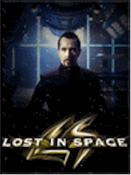
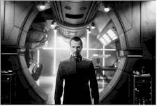
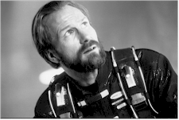
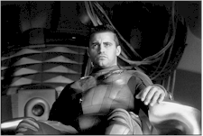
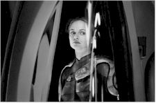
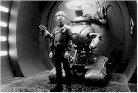

Contents | Features | Reviews | News | Archives | Store |
 |
|
| Movie Credits | Buy It! |
Lost in Space
Review by Eddie Cockrell
Posted 3 April 1998
|  | Directed by Stephen Hopkins Starring
Gary Oldman, William Hurt, Screenplay by Akiva Goldsman |
The plundering of boomer TV memories continues apace with Lost in Space, a busy but decidedly flat version of the television show about a family, a robot and a stowaway knocking around the cosmos looking for a way home that ran for 83 episodes between 1965 to 1968 on CBS. Originally titled Space Family Robinson but rechristened at the last minute over fears that Disney might sue (Swiss Family Robinson had been a hit a few years earlier), the show is remembered chiefly for the interplay among the unnamed but perpetually panicky Forbidden Planet-inspired Robot ("Danger Will Robinson!"), prissy and conniving stowaway Dr. Smith (Jonathan Harris), and the brave, resourceful object of the Robot's warning (Billy Mumy). This louder, more gadget-stuffed version of the tale will be remembered principally for special effects overkill and a dramatically lethal misinterpretation of the original that serves only to alienate fans of the original and frustrate it's younger target audience – which is hopefully jaded to such derivative, franchise-friendly fare.
In September 2058, earth has reached population overload (amusingly, the genuinely creepy 1965 TV pilot – readily available in video stores – is set in October 1997). Professor John Robinson (William Hurt) has been selected to lead his family into space on the Jupiter 2 spacecraft, piloted in a last-minute substitution by hot-dogging pilot Major Don West (Matt LeBlanc). As smart as they are, Professor Robinson's family is far from peaceful: mother Maureen (Mimi Rogers) is upset that their children are being neglected in the name of science, while no-nonsense eldest daughter Judy (Heather Graham) busies herself with active involvement in the mission. Middle child Penny (Lacey Chabert) is the wildest of the family, sneaking out of the house and pouring out her heart to her portable camcorder ("Pennyvision"). Young Will Robinson (Jack Johnson) misses the presence of his father, but seems to have a natural aptitude for machinery and a good head on his shoulders.
Goaded by the mysterious Business Man (Edward Fox), the Robot on board Jupiter 2 is sabotaged by the brooding, awkward base physician Dr. Zachary Smith (top-billed Gary Oldman). Left for dead onboard the ship by his deceitful handler, Smith becomes a reluctant confederate of the Robinsons as they fix the dangerously damaged ship, fly directly through a sun, battle dangerous space spiders on an abandoned spaceship and finally come face-to-face with a sinisterly altered future (involving I Shot Andy Warhol star Jared Harris, son of actor Richard Harris) after they crash-land on a strange planet.
In this atmospheric but clumsily retooled new version, based in large part on that 1965 pilot episode, the goofily appealing straight-arrow approach of the show (which sunk sadly into self-parody and surrealism in later episodes) is replaced by a dramatic gravity wholly inappropriate to the spirit of adventure. And the comedy elements used to leaven the crisis, which usually consisted of Smith's efforts to sell the Robinsons down the nearest celestial river to whichever species of alien they happened upon that week and/or the Robot's antics attempting to protect the inquisitive Will, are almost entirely missing. Without this balance, the film grinds to a halt under the weight of politically correct Issues inserted into the plot: the dysfunctional nature of the Robinsons (who knew from dysfunctional in 1965?), followed by the inevitable bonding and sentiment obviously meant to teach the values of family togetherness and unified problem-solving.
The first sentence of the film's presskit trumpets the "more than 750" special effects in the film, and the movie's problems begin here. There's just too much going on, most of it stolen from other genre films (from Blade Runner to Star Wars) to get any original momentum going. There's even a cute alien, Blawp, added for a desperate bit of comedy relief, and a Darth Vader-like entity (dubbed "Spider Smith" in the credits) tacked on to the Dickens-meets-It's a Wonderful Life end for some equally yearned-for dramatic tension. The tragedy here is that perhaps a dozen craft and special effects outfits, lead by the venerable Jim Henson's Creature Shop and featuring such distinctively named firms as Cinesite, Framestore, The Magic Camera Company and Men in White Coats, employed hundreds of people to create digital effects that look for the most part dull and two-dimensional, like the skin of a lizard. That could be overlooked if they served a unified dramatic purpose – which they don't. Director Stephen Hopkins brings the same indecision to this movie that sank some of his previous efforts, including the fifth and least successful Nightmare on Elm Street movie (The Dream Child, 1989), Judgment Night (1993), Blown Away (1994) and 1996's The Ghost and Darkness (to his credit, however, 1990's Predator 2 improves significantly on the premise – if not the execution of – original).
The more conventional moviemaking crafts are equally populated – the carpenters and plasterers alone take up more than one page each – and similarly muddled. While Norman Garwood's production design provides an eye-catching update of the cavernous Jupiter 2 (he also designed Terry Gilliam's Brazil), Vin Burnham's costume designs echo far too closely her principal claim to fame, which is designing various Batsuits for the first two editions of that franchise (the Robinson's flight suits appear far too kinky for family wear). And, if like many of the plot devices, the rhythm and pace of the cutting seem familiar, editor Ray Lovejoy counts among his credits Stanley Kubrick's pivotal 2001: A Space Odyssey and James "King of the World" Cameron's rousing Aliens. The early John Williams score of the TV show (any kid stopped on the street during the show's run could've hummed it) is given a full-bore updating by Apollo Four Forty, with additional contributions from Juno Reactor & The Creatures, Propellorheads, Death in Vegas, Fatboy Slim (amusingly sampling Edwin Starr's "Everybody Needs Love"), The Crystal Method (Aha! Now "Busy Child" makes sense!) and, inevitably, Space. Yet as interesting as the music is, it is one more example of creative suffocation that sucks the life out of a genial original.
The name-driven cast does the best it can with directionless material. Before judging Hurt too harshly for stooping to genre, remember that he made a most auspicious big-screen debut in Ken Russell's Altered States nearly 20 years ago. His distinctive mannerisms – that deliberate speech pattern, subdued double take-cum-squint and small shake of the head – are jarring in this context, but somehow reassuring; he nails the self-absorbed father, guilty for missing his children's childhood but vitally concerned with the affairs of the world. Although she has great chemistry with Hurt, Mimi Rogers' Maureen is underwritten to the point of shrewishness; better to catch her in the extraordinary 1991 drama The Rapture, which is about as far away from this kind of family fare as you can get and proves that it's the role, not the actress, that limits her effectiveness here.
Oldman's Dr. Smith is the film's main flaw and the source of the movie's listlessness. As played by the remarkable, now 84-year-old TV veteran Jonathan Harris (soon to be heard as the voice of praying mantis Manny in A Bug's Life), the TV Smith was a exuberantly contrary creation, three parts schemer to five parts penitent. The movie Smith is written seriously and performed with much gravity by Oldman, who for all the worlds seems pissed off at having to play him. There's no unpredictability and no fun at all in the character that on the small screen could most be counted on to bring a broad wink to the otherwise grave proceedings.
Among the younger players, Lacy Chabert (from Fox's "Party of Five") is all vulnerable rebellion as Penny – sort of an intergalactic Alannis Morissette – while Jack Johnson as the ver-say-die Will emerges as the emotional center of the movie, whether calmly fiddling with cast-off parts or saving the family by using the robot as a sort of virtual reality game to blast those pesky spiders (young Johnson, the grandson of Hollywood hyphenate Nunnally Johnson, has been acting since age 4, and his sizeable resume includes recent Pepsi commercials with Shaquille O'Neal). Heather Graham expands her range significantly by moving from Boogie Nights to the rather more chaste Judy (she's also in the new Robert Downey Jr. movie Two Girls and a Guy), but the movie stumbles severely by wasting a surprisingly rugged performance by "Friends" star Matt LeBlanc as Major West – who instead of being already involved with Judy as in the original program is transformed into a leering, macho boor for the sole purpose, it seems, of a few protective reaction shots from Papa Robinson.
The movie is peppered with cameos that range from the predictable to the cryptic. The original Maureen Robinson, June Lockhart, has an amusing scene at the very beginning of the picture as Will's morphing school principal, while a well-preserved Mark Goddard does a crafty turn as LeBlanc's boss (Goddard was the first West). Edward Fox, of all people, has a blink-and-you'll-miss-him bit as the "Business Man" who enlists Smith in the sabotage scheme, while you don't have to be blinking to miss Marta Kristen (Judy) and Angela Cartwright (Penny) as reporters. Remarkably, the movie manages the canny wit of tracking down original Robot voice Dick Tufeld, and then squandering the opportunity by limiting the expansion of the Robot's role to the clever spider sequence that finds Will repeating orders through the machine.
As certain as the fate of Lost in Space would appear to be (and at a bit over two hours the movie is absurdly long for it's apparent target audience of 8 to 14-year-olds), the wave of big-screen TV show adaptations is far from over. In the next 18 months expect to see movies made from such familiar properties as The X-Files, Inspector Gadget, the inevitable sequel to Mission: Impossible, My Favorite Martian and Star Trek IX. And, in a final irony, Goldsman is currently working on the long-delayed new Superman movie, now apparently called Superman Lives.
As Hollywood moves towards a release cycle in which movies make most of their money in the opening weekend and then virtually disappear, look for the relentless television advertising and word-of-mouth to lure Lost in Space's target audience to theaters in big – but not titanic – numbers (the weather may help, as rain is predicted over some of the country). "This mission sucks," says the sassy new Penny. While it doesn't do that, exactly, neither will it attract or excite the demographic most likely to appreciate – if not rejoice at – a straight-faced, issue-laden rendering of a childhood favorite. Lost in Space will very soon be lost to theaters, and the sequel it so desperately seeks, if made, should by all rights go straight to video or the Saturday morning cartoon wasteland.
Contents | Features | Reviews | News | Archives | Store
Copyright © 1999 by Nitrate Productions, Inc. All Rights Reserved.